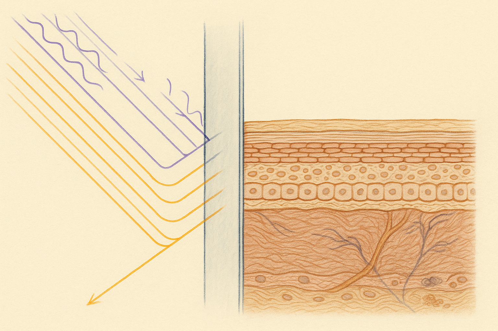
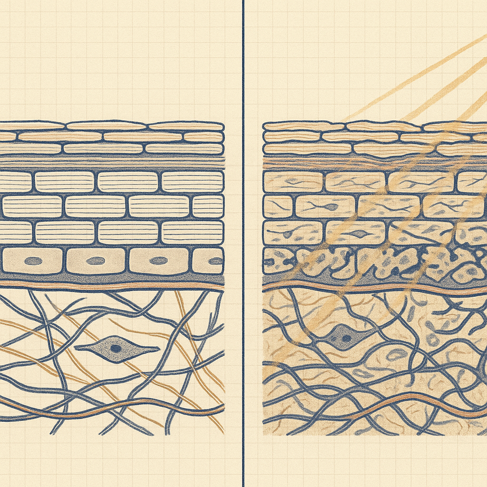
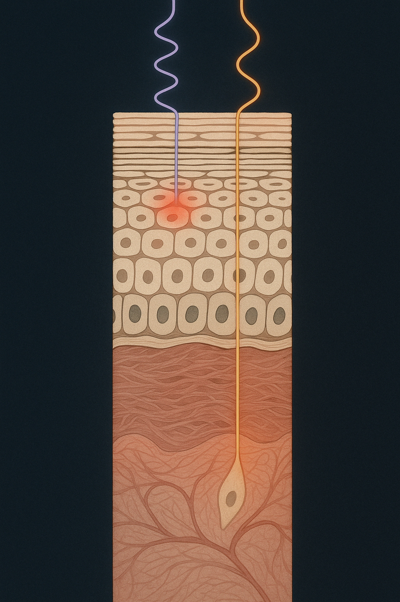

Review below. Reply approve to publish the Facebook post, or tell me edits.

Nobody puts sunscreen on for the drive to work, and that is the exposure that repeats 250 times a year.
The drive to work. The window seat at the cafe where the light is good. The desk under the north-facing pane, the one everybody wants.
None of that feels like sun exposure. Nobody packs sunscreen for the Hume.
The wavelength that hurts is the one glass blocks. The wavelength associated with long-term photoageing is the one that mostly gets through.
So a meaningful slice of the ultraviolet a person collects across a lifetime arrives while they are sitting still, indoors or in a car, in five and ten minute increments that nobody counts. It does not burn, so it never announces itself. It just accumulates.
UVB is the shorter wavelength. It is the burning one, the one that turns shoulders pink at the beach. Ordinary window glass largely stops it. That is exactly why you can sit in a sunny lounge room all afternoon and not go red.
UVA is longer. It penetrates further into the dermis, the deeper layer where the collagen and elastin fibre network sits, and it passes through glass far more readily than UVB does. So the signal that normally tells you to move into the shade (heat, sting, colour) never fires. No burn, no warning, still an input.
Windscreens are laminated: two sheets of glass bonded to a plastic interlayer, mainly for safety, since laminated glass holds together instead of showering the cabin. That interlayer happens to be very good at absorbing UVA as well. Side and rear windows are usually tempered rather than laminated, because they need to break away in an emergency, and tempered glass lets a substantial share of UVA through.
A 2016 assessment of front and side glass across a range of vehicles found windscreens blocked UVA very consistently, while side windows varied enormously from car to car, with many offering far less protection than the driver would assume (Boxer Wachler, 2016). Earlier measurement work inside vehicles reached the same practical conclusion: the cabin is not a UV-free room, and side glass is where the exposure comes in (Moehrle et al., 2003; Hampton et al., 2004).
Which means exposure in a car is not evenly spread across a face. It arrives from one side.
In 2012 the New England Journal of Medicine published a photograph of a man who had driven a delivery truck for 28 years. One side of his face showed deep, thickened, furrowed photoageing. The other looked ordinary for his age. The difference was the driver's side window (Gordon and Brieva, 2012).
Be careful with that image, because it is a single case report. It is a striking illustration, not a measurement of dose, and one man's face cannot tell you how much any of this matters for a person who drives twenty minutes a day.
The population-level echo is more useful. A review of skin cancer lesions in the United States found they skewed to the left side of the body, the side that faces the window in a left-hand-drive country (Butler and Fosko, 2010). Australia is right-hand drive, so the same logic inverts: here the exposed side is the right cheek, the right temple and the right forearm resting on the door.
This is the part worth actually doing, and it costs nothing.
Stand at a window in indirect daylight. Not under downlights, not with your phone torch, both of those flatten everything and lie to you. Face a mirror straight on.
Compare left and right. Look at the cheek, then the outer eye area and temple. You are not looking for a single mark. You are looking for texture, mottled or uneven pigment, fine crosshatching in the skin surface, a difference in how the light sits.
Then turn your head ninety degrees each way and check the same two spots in profile. This step matters, because straight-on lighting is flattering by design and hides surface texture. Profile is where the difference usually shows.
Most people find one. That is normal. It is dose, not a verdict, and it is not a diagnosis of anything. If a specific spot has changed, grown or has an irregular border, that is a conversation for your GP or a dermatologist, not a mirror.
Sunscreen on the days you are not going anywhere. This is the single biggest gap for most people. Sunscreen goes on for the beach and the netball sideline, and gets skipped on the Tuesday spent at a desk beside a window, which is precisely the exposure that repeats 250 times a year.
The driver's side arm and cheek, specifically. If you commute, that side is doing more work than the other. Treat it accordingly.
A hat does nothing for a side window. Brims are engineered for light coming from above. Light coming in horizontally at cheek height goes straight underneath.
And yes, UV-filtering window film exists, it is legal within tint limits that vary by state, and it is a genuine option if you spend real hours driving. Worth knowing about, worth checking your state's rules, and that is as far as we will take it.
Nothing here is dramatic. That is the point of it.
There is no moment where the damage happened. There is a five-minute-a-day input that ran for twenty years while everyone was looking at the interventions that cost hundreds of dollars and take an afternoon. Skin longevity is mostly arithmetic: small, repeated, unremarkable inputs, multiplied by an enormous number of days.
Which is also the encouraging half of it, because deliberate small inputs compound on exactly the same maths. A consistent sunscreen habit. Any evening routine you will actually repeat. None of it looks like much on any given Tuesday. It was never meant to.
Go and look. Which side is yours, and can you tell?
None of this is about our product. If you want a closer look at what we make, it is the Redermis face and neck mask. It is a cosmetic device, not medicine.
#skinlongevity #uva #sunprotection #skinscience #everydaysun #australianskin

Stand at a window and look at your right cheek. Then your left.
In Australia, the driver's side is the right. After enough years, the two sides of a face often do not match.
Here is why. Glass stops most UVB, the burning wavelength. That is the reason nobody gets sunburnt through a car window. What it lets through is a lot of UVA, the longer wavelength that reaches deeper, down into the dermis, where the fibre network that holds skin firm sits. No burn means no warning signal, so nobody counts it.
A 2016 JAMA Ophthalmology assessment found windscreens block UVA consistently, while side windows vary a lot car to car.
So the exposure that quietly compounds is not the beach day you remember. It is the commute, the window seat, the desk beside the pane. Five minutes at a time, for twenty years.
One honest calibration: this is dose, not a verdict you can read off your face. Almost everyone has some.
Save this and do the check next time you are in the car.
So: which side is yours? Right cheek, left cheek, or genuinely can't tell? And how long is your daily drive? Drop the number, I'm curious how it lines up.
#skinlongevity #uva #skinscience #australianskin
FIRST COMMENT (post the link here, not in the post body): For anyone curious what we make: https://redermis.com.au/products/red-light-therapy-face-neck-mask

Check your right cheek against your left. In a right-hand-drive country they often stop matching.
Glass blocks the burning wavelength. It does not block the ageing one. UVA is longer, goes deeper, and passes straight through a side window, measured across car glass in 2016.
Windscreens are laminated and filter most of it. Side windows usually are not. Right-hand drive country, so here it tends to be the right cheek and the right forearm.
Look for the asymmetry, not for damage: slightly coarser texture on one side, a little more pigment, deeper lines running from the nose. Natural light, no makeup, ten seconds.
Almost everyone has some. It is dose, not a verdict.
The inputs that change how skin looks in ten years are almost never dramatic. They are five minutes a day, repeated, in both directions.
Save this, do the check tonight.
Tell me in the comments: right, left, or can't tell? And what's your daily drive, in minutes?
More on this is on the blog, link in bio.
#skinlongevity #uva #photoageing #australianskin #redlighttherapy
## Title
Right cheek vs left: the sun you get driving
## Description
Ordinary glass blocks UVB, the burning wavelength, but lets most UVA through, and UVA is the one tied to long-term ageing. Most people assume car and office windows block UV. They only block the burning one. The drive to work and the desk by the window quietly add it up. Ten-second self-check: in natural light, compare your right cheek to your left (in Australia, the driver's side is the right). Everyone has some. It is dose, not a verdict.
## CTA
Save this for your next drive: right cheek versus left, ten seconds in natural light.
## Destination URL
https://redermis.com.au/blogs/journal
## Hashtags
#skinlongevity #uvaprotection #skincarescience #sunsafeaustralia #uvavsuvb
Note: this pin reuses the Instagram image.